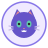

01 · Choose and load a prompt
Select one of the 3 prompts below, then drag and drop it into the LOAD BOX. Once dropped, it will automatically launch into the journey!

02 · From text pieces to vocabulary IDs
Text splits into subword pieces. Each piece searches through the model's vocabulary dictionary until its matching integer ID is stamped.
03 · Tokens become points in 3D learned space
Every token arrives into the 3D manifold blinking with a radar halo. Click or hover any point to inspect its 3D coordinate vector!
04 · How each token gathers context
Watch the attention spotlight advance word-by-word automatically like a rainbow sweep, firing beams with percentage relevance to all other tokens.
05 · Inside the Transformer: How Words Gain Meaning
Across 32 layers, words connect to each other, recall facts from memory, and build an enriched understanding.
06 · From layer output to a complete answer
The final layer vectors produce vocabulary logits. Candidate tokens are evaluated with probability scores, and the response is generated token by token!